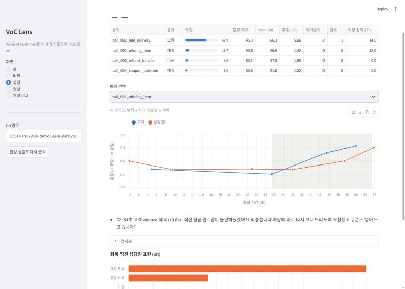
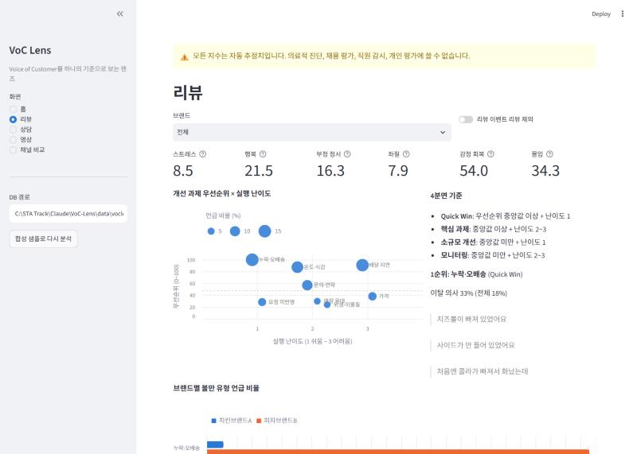
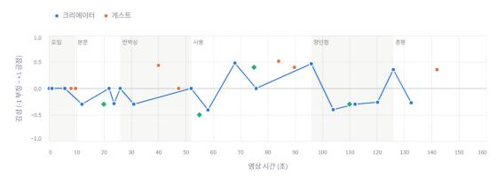
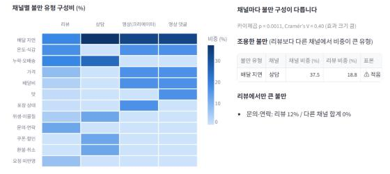
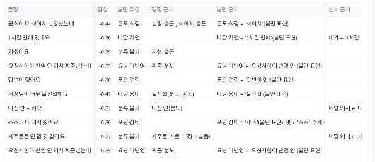
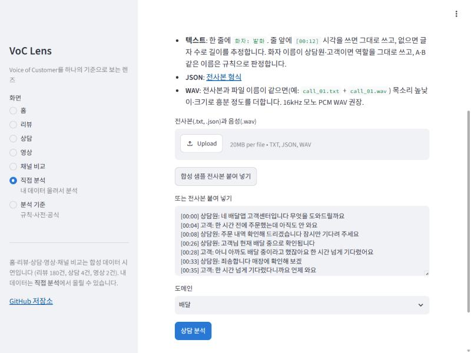

리뷰 텍스트
배달앱·쇼핑몰 후기 CSV. 절 단위로 나눠("맛은 좋은데 / 배달이 늦어요") 감정, 불만 유형, 속성별 감성, 재주문·이탈 의사를 찾습니다. 리뷰 이벤트 리뷰는 표시해서 따로 봅니다.
CX · VoC 데이터 분석 포트폴리오
배달·쇼핑 리뷰, 고객센터 상담, YouTube 영상과 댓글을 같은 감정 지수와 불만 분류로 분석해서 "무엇부터 고칠지"를 우선순위로 정리하는 분석 도구입니다. 공개 실제 데이터로 정확도를 재고, 그 결과를 서비스 화면에 함께 보여 줍니다.
36초 · 회복 직전 상담원 발화
"많이 불편하셨겠어요 죄송합니다 매장에 바로 다시 보내 드리도록 요청했고 쿠폰도 넣어 드렸습니다"
세로축은 감성(Valence, -1 부정 ~ +1 긍정). 고객 "아 진짜 짜증나네요"(-0.47)가 "친절하게 해 주셔서 좋네요"(+0.55)로 바뀌었습니다. 감정 급변 탐지가 회복 구간과 직전 발화를 자동으로 찾았습니다. 합성 상담 전사본입니다.
리뷰는 리뷰 이벤트 때문에 긍정 쪽으로, 상담은 문제가 있을 때 걸기 때문에 부정 쪽으로 치우칩니다. 그래서 채널마다 점수를 따로 만들지 않고 같은 감정 모델과 불만 분류 기준으로 분석한 뒤, 채널 안의 구성비로 비교합니다.
배달앱·쇼핑몰 후기 CSV. 절 단위로 나눠("맛은 좋은데 / 배달이 늦어요") 감정, 불만 유형, 속성별 감성, 재주문·이탈 의사를 찾습니다. 리뷰 이벤트 리뷰는 표시해서 따로 봅니다.
전사본(+ 음성 파일). 인사 스크립트로 상담원과 고객을 구분하고, 끼어들기·대기·같은 말 반복으로 고객 노력을 잽니다. 목소리 높낮이·크기로 흥분 정도를 추정해 텍스트와 합칩니다.
YouTube 자막(사람이 단 자막만)과 댓글. 영상을 도입·사용·장단점·총평 구간으로 나누고, "2:00 배터리 부분 공감" 같은 타임스탬프 댓글을 해당 구간에 연결합니다.
| 지수 (0~100) | 뜻 | 주요 신호 | 연결되는 CX 지표 |
|---|---|---|---|
| 스트레스 | 부정 + 높은 각성 (짜증, 분노) | 부정 감성 × 각성 | — |
| 행복 | 긍정 (만족, 기쁨) | 긍정 감성 | CSAT |
| 부정 정서 | 부정 + 낮은 각성 (실망, 체념). 의료 진단이 아닙니다 | 부정 감성 × (1 − 각성) | — |
| 좌절 | 문제를 해결하느라 애쓴 정도 | 반복 문의, 대기, 끼어들기, 이탈 의사 | CES |
| 감정 회복 | 부정 감정이 뒤에서 긍정으로 돌아섰는지 | 후반부 − 전반부 감성 (50 = 변화 없음) | 서비스 회복, FCR |
| 몰입 | 관심과 열의 | 구체성, 재주문·추천 의사, 영상은 좋아요율·댓글 | NPS 성향 |
유료 LLM API 없이 사전·규칙 기반 기준선으로 끝까지 동작하도록 만들었습니다. 각 단계는 같은 분석 단위 스키마를 주고받아서, 학습 모델로 바꿀 때 해당 단계만 교체하면 됩니다.
아래 세 사례는 합성 데이터에 일부러 넣은 패턴을 도구가 찾아내는지, 그리고 그 결과를 어떤 실행안으로 바꾸는지 보여줍니다. 실제 공개 데이터로 만든 네 번째 사례는 실제 데이터 평가에 있습니다.
리뷰 180건 · 두 배달 브랜드
두 브랜드는 무엇을 먼저 고쳐야 하나?
감정 점수 평균은 두 브랜드가 같았지만 불만의 내용은 완전히 달랐습니다. A는 음식 온도·식감(리뷰의 21.1%), B는 누락·오배송(25.6%, 10월에 +39%)이 1순위입니다.
제안 · B는 사이드 메뉴 체크리스트로 4주 안에 누락 비율을 15% 이하로 낮추는 Quick Win, A는 통기 포장 시범 운영을 분기 과제로.
상담 4건 · 배달앱 고객센터
어떤 상담이 고객을 지치게 하고, 무엇이 감정을 회복시키나?
감정 단어보다 끼어들기 2회, 같은 말 반복, 14.5초 대기가 좌절을 키웠습니다. 감정을 돌려놓은 것은 사과만 한 말이 아니라 사과와 구체적 조치를 한 번에 말한 발화였습니다.
제안 · 조회 후 첫 문장을 "확인됐습니다 + 지금 할 수 있는 조치"로 시작하는 스크립트, 보류 대신 그 자리에서 보상을 안내할 권한.
리뷰 + 영상 + 댓글 · 치킨브랜드A
리뷰만 보면 놓치는 것이 있나?
배달 지연이 리뷰·영상·댓글 모두에서 상위권이라 브랜드 공통 과제로 확인됩니다. 시청자는 배달 대기 장면(0:20)과 가격 이야기(1:50)를 짚어 부정 댓글을 남겼습니다.
제안 · 배달 지연 개선 효과를 리뷰와 영상 댓글에서 함께 추적하고, 맛(소스) 강점을 메뉴 소개의 앞에.
홈(예시 결과)·직접 분석·분석 기준 세 화면입니다. 홈은 직접 분석을 하면 결과가 어떻게 나오는지 합성 데이터로 보여주며, 요약·리뷰·상담·영상·채널 비교 탭으로 나뉩니다. 모든 화면 맨 위에 "자동 추정치이며 진단·개인 평가에 쓸 수 없다"는 고지가 고정되어 있습니다. 차트 색은 개체에 고정했습니다 (리뷰·고객·긍정 = 파랑, 상담원 = 주황, 영상 댓글 = 청록, 부정 = 빨강).




라이브 대시보드의 직접 분석 화면에 리뷰 CSV, 상담 전사본, 영상 자막을 올리면 그 자리에서 같은 기준으로 분석합니다. 결과마다 어떤 표현 때문에 그렇게 판단했는지가 함께 나옵니다.
본문·별점·작성일·브랜드 열을 자동으로 찾습니다. 엑셀에서 저장한 한글 CSV(CP949)도 읽고, 절별 결과를 CSV로 내려받을 수 있습니다.
"상담원: … / 고객: …" 줄을 붙여 넣으면 됩니다. [00:12] 시각은 선택이고, 같은 이름의 WAV를 함께 올리면 목소리 분석까지 더합니다.
VTT·SRT 자막과 댓글 파일을 올리면 내용 구간을 나누고, "3:20" 같은 타임스탬프 댓글을 해당 구간에 연결합니다.


분석 기준 화면에는 감정 사전, 지수 공식, 불만 분류표 31개 유형, 실제 데이터로 잰 정확도, 상담·영상 규칙, CSAT·CES·NPS 계산식이 실제 설정 파일에서 바로 만들어져 나옵니다. 규칙을 바꾸면 화면도 함께 바뀝니다.
공개 실제 데이터(네이버 쇼핑 리뷰 20만 건, KOTE 댓글 5만 문장)로 정확도를 쟀습니다. 규칙과 모델은 개발용 80%만 보고 만들었고, 숫자는 그때 보지 않은 평가용 20%에서 냈습니다. 평가 세트(무작위 337개 절)의 정답은 규칙을 보지 못한 Claude 라벨러 둘이 붙였습니다.
| 불만 찾기 (온라인 쇼핑, 절 단위) | 정밀도 | 재현율 | F1 |
|---|---|---|---|
| 규칙 v0.2.1 (배달용 규칙 그대로) | 0.58 | 0.08 | 0.14 |
| 규칙 v0.3.0 (쇼핑 유형 10개 추가) | 0.80 | 0.32 | 0.46 |
| 규칙 v0.3.1 (오탐 정리) · 배포 화면 | 0.88 | 0.32 | 0.47 |
| 규칙 ∪ 약지도 불만 분류기 + 학습 감정 모델 | 0.64 | 0.55 | 0.59 |
정밀도 = 불만이라고 판단한 것 중 맞은 비율, 재현율 = 실제 불만 중 잡아낸 비율. 감정 극성(KOTE)은 감정 사전 AUC 0.71에서 학습 감정 모델 0.98로 올랐습니다.
실제 데이터 · 쇼핑 리뷰 39,807건
온라인 쇼핑 리뷰에서 무엇을 먼저 고쳐야 하나?
양은 제품 품질 불만(1~2점 리뷰의 24.7%)이 가장 많지만, 오배송·누락은 한 번 겪으면 1점이 많고 출고 검수로 바로 줄일 수 있습니다. 재구매 고객의 실망은 신선식품의 "지난번과 달라졌다"에 몰립니다.
제안 · 출고 바코드 검수와 구성품 체크리스트(Quick Win), 재구매 고객 1~2점 리뷰 주간 모니터링.
실패에서 배운 것
별점으로 기준값을 맞추면 되지 않나?
"5점 리뷰에 붙은 불만은 오탐"이라고 가정하고 기준값을 맞췄더니 평가 세트에서 오히려 나빠졌습니다. "배송은 늦었지만 만족"처럼 고득점 리뷰에도 불만이 있어서입니다. 그래서 개발용 데이터에도 문장 단위 정답을 따로 만들어 선택에 썼습니다.
교훈 · 대리 지표는 방향 확인용. 기준값 선택은 같은 단위의 정답으로, 평가 세트는 마지막에 한 번만.
남은 과제
어디를 아직 못 잡나?
약지도 분류기는 규칙이 놓치던 사이즈·색상, 가격, 품질·마감을 더 잡았습니다. 하지만 약지도 라벨이 규칙에서 나와서, 규칙이 거의 못 잡는 유형은 분류기도 배우지 못했습니다.
다음 · 이 유형의 학습 예시를 직접 라벨로 늘리고, 사람 검수로 Claude 정답의 신뢰도를 확인.
모든 모델은 기준선과 비교하고, 잘 안 되는 부분도 그대로 적습니다.
학습에 쓰지 않은 리뷰 38건 기준 · MAE가 낮을수록 좋음 · 합성 데이터
| 모델 | MAE |
|---|---|
| 평균 별점으로 찍기 | |
| 감정 점수 하나만 | |
| 전체 특징 13개 릿지 회귀 |
예측과 실제 별점의 Spearman ρ 0.70. 만족 비율(4점 이상)은 실제 68.4%, 추정 63.2%입니다. 회귀 예측이 평균 쪽으로 몰리는 것을 보정하기 전에는 55.3%였습니다.
명령 한 줄로 세 채널 분석, 리포트, SQL 집계를 실행할 수 있습니다. 대시보드는 첫 실행 때 합성 샘플로 데이터를 자동으로 채웁니다.
예시 결과를 둘러보고, 직접 분석에서 내 리뷰·상담·영상을 올려 볼 수 있습니다. 잠시 쓰지 않으면 잠들어 있어서 처음 열 때 30초쯤 걸릴 수 있습니다.